ADDITION COMPOUNDS :
They are formed by the combination of two or more stable compounds in stoichiometric ratio.These are
(1) Double salts and (2) Coordination compounds
DOUBLE SALTS :
Those addition compounds which lose their identity in solutions eg. K2SO4 , Al2(SO4)
COORDINATIONCOMPOUNDS :
Those addition compounds which retain their identity (i.e. doesnt lose their identity) in solution are
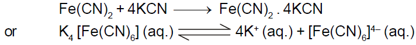Central Atom/Ion :
In a coordination entitythe atom/ion to which are bound a fixed number of ligands in a definite geometrical arrangement around it.
Ligands :
The neutral molecules, anions or cations which are directly linked with central metal atom or ion in the coordination entity are called ligands.
Chelate ligand :
Chelate ligand is a di or polydentate ligand which uses its two or more donor atoms to bind a single metal ion producing a ring.
Ambidentate Ligand :
Ligands which can ligate through two different atoms present in it
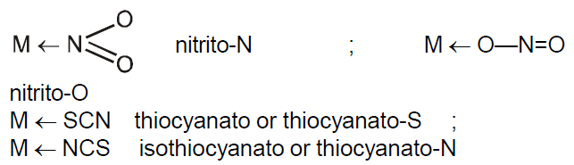Coordination Number :
The number of ligand donor atoms to which themetal is directly attached.
Oxidation number of Central Atom :
The oxidation number of the central atom is defined as the charge it would carry if all the ligands are removed along with the electron pairs that are shared with the central atom. [Fe(CN)6]3- is +3 and it is written as Fe(III).
Homoleptic and heteroleptic complexes
Complexes in which a metal is bound to only one type of donor groups, e.g., [Cr(NH3)6]3+, are known as homoleptic. Complexes in which a metal is bound to more than one type of donor groups, e.g., [Co(NH3)4Br2]+, are known as heteroleptic.
Nomenclature of Coordination Compounds
Writing the formulas of Mononuclear Coordination Entities :
(i) The central atom is placed first.
(ii) The ligands are then placed in alphabetical order. The placement of a ligand in the list does not depend on its charge.
(iii) Polydentate ligands are also placed alphabetically. In case of abbreviated ligand, the first letter of the abbreviation is used to determine the position of the ligand in the alphabetical order.
(iv) The formula for the entire coordination entity, whether charged or not, is enclosed in square brackets.When ligands are polyatomic, their formulas are enclosed in parentheses. Ligands abbreviations are also enclosed in parentheses.
(v) There should be no space between the ligands and the metal within a coordination sphere.
(vi) When the formula of a charged coordination entity is to be written without that of the counter ion, the charge is indicated outside the square brackets as a right superscript with the number before the sign. For example, [Co(H2O)6]3+, [Fe(CN)6]3- etc.
(vii) The charge of the cation(s) is balanced by the charge of the anion(s).
Writing the name of Mononuclear Coordination Compounds :
(i) Like simple salts the cation is named first in both positively and negatively charged coordination entities.
(ii) The ligands are named in an alphabetical order (according to the name of ligand, not the prefix) before the name of the central atom/ion.
(iii) Names of the anionic ligands end in o and those of neutral ligands
are the same except aqua for H
(iv) Prefixes mono, di, tri, etc., are used to indicate the number of the one kind of ligands in the coordination entity.When the names of the ligands include a numerical prefix or are complicated or whenever the use of normal prefixes creates some confusion, it is set off in parentheses and the second set of prefixes is used.
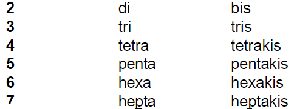(v) Oxidation state of themetal in cation, anion or neutral coordination entity is indicated byRoman numeral in the parentheses after the name of metal.
(vi) If the complex ion is a cation, the metal is named same as the element. For example, Co in a complex cation is called cobalt and Pt is called platinum. If the complex ion is an anion, the name of themetal ends with the suffix - ate. For example, Co in a complex anion, [Co(SCN)4]2- is called cobaltate. For somemetals, the Latin names are used in the complex anions.
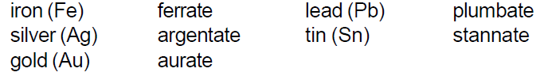(vii) The neutral complex molecule is named similar to that of the complex cation.
Werner's Theory :
According to Werner most elements exhibit two types of valencies : (a) Primary valency and (b) Secondary valency.
(a) Primary valency :
This corresponds to oxidation state of the metal ion. This is also called principal, ionisable or ionic valency. It is satisfied by negative ions and its attachment with the central metal ion is shown by dotted lines.
(b) Secondary or auxiliary valency :
It is also termed as coordination number (usually abbreviated as CN) of the centralmetal ion. It is non-ionic or non-ionisable (i.e. coordinate covalent bond type). In the modern terminology, such spatial arrangements are called coordination polyhedra and various possibilities are
Effective Atomic Number Rule given by Sidgwick :
EffectiveAtomic Number (EAN) =Atomic no. of centralmetal Oxidation state of central metal + No. of electrons donated by ligands.
Valence Bond Theory :
The model utilizes hybridisation of (n-1) d, ns, np or ns, np, nd orbitals of metal atom or ion to yield a set of equivalent orbitals of definite geometry to account for the observed structures such as octahedral, square planar and tetrahedral, and magnetic properties of complexes. The number of unpaired electrons,measured by themagneticmoment of the compounds determines which d-orbitals are used.
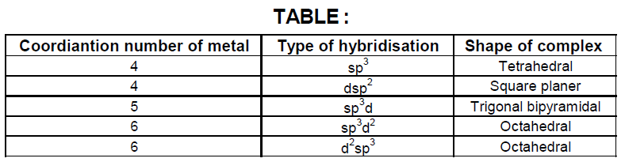Coordination Number Six :
In the diamagnetic octahedral complex, [Co(NH3)6]3+, the cobalt ion is in +3 oxidation state and has the electronic configuration represented as shown below.
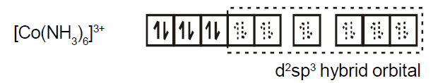The complex [FeF6]4- is paramagnetic and uses outer orbital (4d) in hybridisation (sp3d2) ; it is thus called as outer orbital or high spin or spin free complex. So,
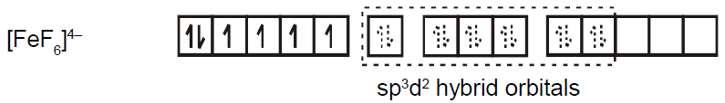In the paramagnetic and tetrahedral complex [NiCl4]2-, the nickel is in +2 oxidation state and the ion has the electronic configuration 3d8. The hybridisation scheme is as shown in figure.
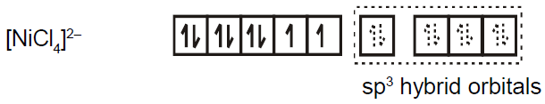Similarly complex [Ni(CO)4] has tetrahedral geometry and is diamagnetic as it contains no unpaired electrons. The hybridisation scheme is as shown in figure.
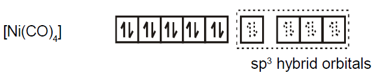The hybridisation scheme for [Ni(CN)4]2- is as shown in figure.
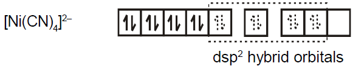It suffers fromthe following shortcomings :
1. A number of assumptions are involved.
2. There is no quantitative interpretation of magnetic data.
3. It has nothing to say about the spectral (colour) properties of coordination compounds.
4. It does not give a quantitative interpretation of the thermodynamic or kinetic stabilities of coordination compounds.
5. It does notmake exact predictions regarding the tetrahedral and squareplanar structures of 4-coordinate complexes.
6. It does not distinguish between strong and weak ligands.
Magnetic Properties of Coordination Compounds :
n = number of unpaired electrons
For metal ions with upto three electrons in the d-orbitals like Ti3+, (d1); V3+ (d2); Cr3+(d3); two vacant d-orbitals are easily available for octahedral hybridisation. The magnetic behaviour of these free ions and their coordination entities is similar. When more than three 3d electrons are present, like in Cr2+ andMn3+(d4);Mn2+ and Fe3+(d5) ; Fe2+ and Co3+(d6); the required two vacant orbitals for hybridisation is not directly available (as a consequence of Hunds rules). Thus, for d4, d5 and d6 cases, two vacant dorbitals are only available for hybridisation as a result of pairing of 3d electrons which leaves two, one and zero unpaired electrons respectively
Crystal Field Theory :
The crystal field theory (CFT) is an electrostatic model which considers themetal-ligand bond to be ionic arising purely fromelectrostatic interaction between the metal ion and the ligand.
(a) Crystal field splitting in octahedral coordination entities :
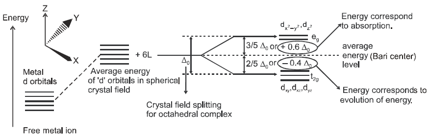Figure showing crystal field splitting in octahedral complex.
The crystal field splitting, Δ0, depends upon the fields produced by the ligand and charge on themetal ion. Ligands can be arranged in a series in the orders of increasing field strength as given below :
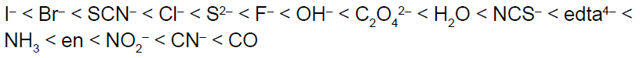Such a series is termed as spectrochemical series. It is an experimentally determined series based on the absorption of light by complexes with different ligands.
Calculation of Crystal Field stabilisation energy (CFSE)
where n & n are number of electron(s) in t2g & eg orbitals respectively and Δ0 crystal field splitting energy for octahedral complex. *n represents the number of extra electron pairs formed because of the ligands in comparison to normal degenerate configuration.
(b) Crystal field splitting in tetrahedral coordination entities :
In tetrahedral coordination entity formation, the d orbital splitting is inverted and is smaller as compared to the octahedral field splitting. For the same metal, the same ligands andmetal-ligand distances, it can be shown that
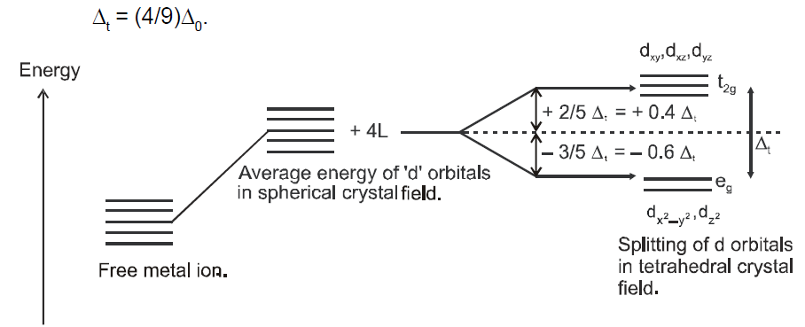Figure showing crystal field splitting in tetrahedral complex.
Colour in Coordination Compounds :
According to the crystal field theory the colour is due to the d-d transition of electron under the influence of ligands. We know that the colour of a substance is due to the absorption of light at a specific wavelength in the visible part of the electromagnetic spectrum (400 to 700 nm) and transmission or reflection of the rest of the wavelengths.
Limitations of crystal field theory
(1) It considers only the metal ion d-orbitals and gives no consideration at all to other metal orbitals (such as s, px, py and pz orbitals).
(2) It is unable to account satisfactorily for the relative strengths of ligands. For example it gives no explanation as to why H2O is a stronger ligand than OH in the spectrochemical series.
(3) According to this theory, the bond between themetal and ligands are purely ionic. It gives no account on the partly covalent nature of themetal ligand bonds.
(4) The CFT cannot account for the π-bonding in complexes.
Stability of Coordination Compounds :
The stability of a coordination compound [MLn] is measured in terms of the stability constant (equilibrium constant) given by the expression,
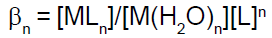for the overall reaction :
By convention, thewater displaced is ignored, as its concentration remains essentially constant. The above overall reaction takes place in steps, with a stability (formation) constant, K1, K2, K3, ...... Kn for each step as represented below :
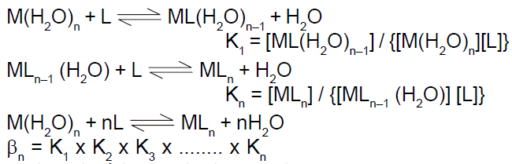βn, the stability constant, is related to thermodynamic stability when the system has reached equilibrium.